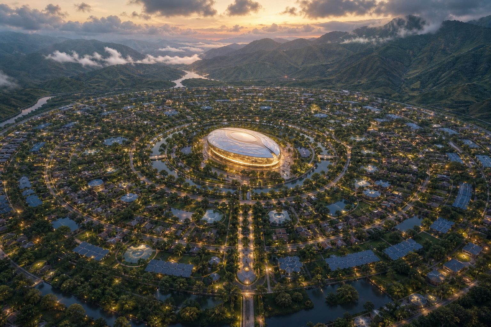

Risaralda
1200–1800 m. Ladera, sismo, alud.

Risaralda · Valle · Chocó
Óvalo de células. En el centro, un núcleo de vida.
Se camina entre árboles. El suelo manda.
1200–1800 m. Ladera, sismo, alud.
900–1100 m. Río, calor, crecida.
Cota baja. Selva, lluvia, río-camino.
Toca un suelo: sitio, agua, luz, huerta.
Separación en origen → dos metabolismos → compost higiénico → fracción técnica limpia → RCD a agregado → residual publicado
Valores
Vida en común
Oficios de la célula
Metabolismo
¿Cómo se vive aquí?
El agua se bebe y vuelve. Se camina entre árboles.
Agua · verde
Primero la célula. Luego la red. Luego el núcleo. Cada peso a la vista, con fuente.
Cada peso con origen, ruta, territorio y fuente.
El tablero se verifica cada minuto. Sin fuente, no entra cifra.
Aún no se ha leído el caudal.
| Origen | Monto | Ruta | Territorio | Ejecutado | Fuente |
|---|
Es información, no regulación. No señalamos a nadie; solo informamos. Toda cifra debe ser verificada por el usuario ante su fuente original.
Arquitectas, oficios, universidades, artistas, gobiernos. Código abierto.